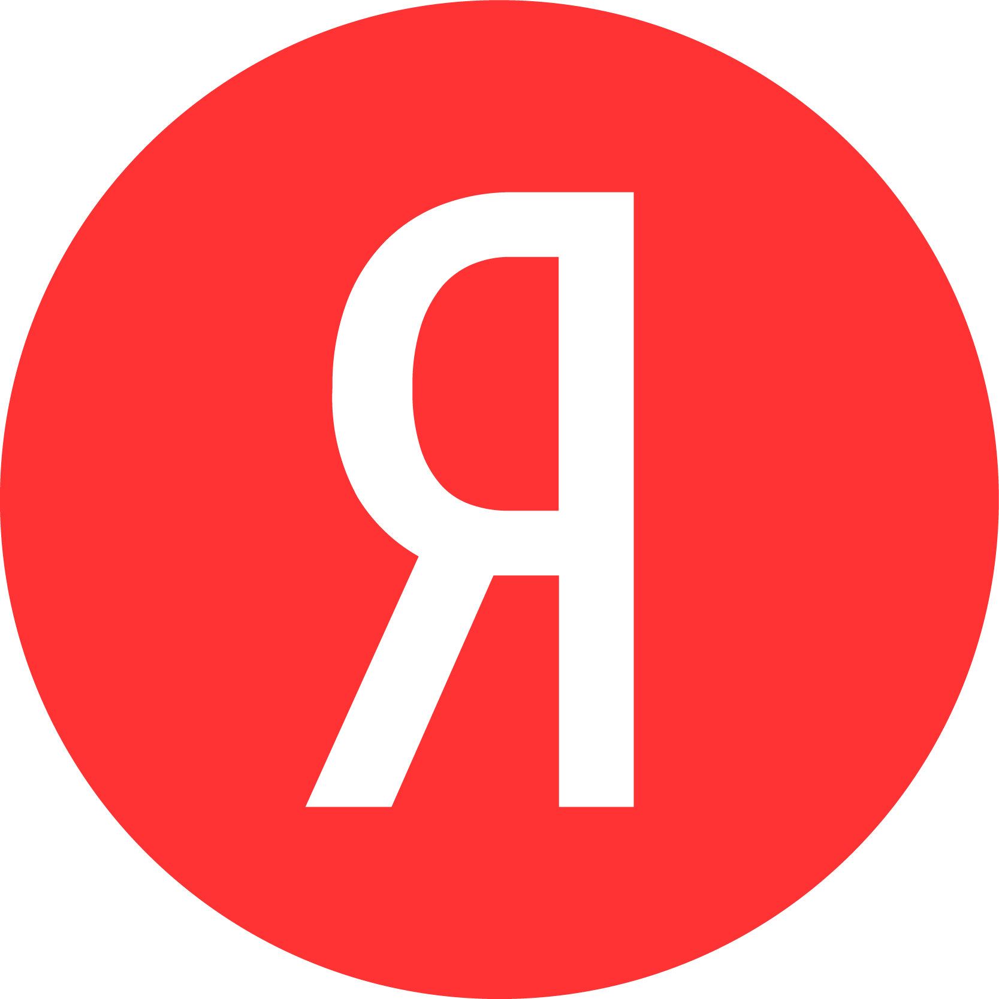

Создание и использование в современности.
В марте 2010 года появилась сборка «Chromium» под названием «Яндекс.Хром», который был доступен для скачивания со страницы chrome.yandex.ru. В начале января 2012 года, в соответствии с требованиями юристов Google, данный браузер был переименован в «Яндекс.Интернет». Логотип браузера был изменён на жёлтый клубок ниток. Адрес официальной страницы переехал на browser.yandex.ru. Отличия этого продукта от оригинала были минимальны: Яндекс.Интернет ориентирован на сервисы Яндекса и в нём отсутствовала синхронизация со службами Google. Однако на этом работа над браузером не закончилась. По словам Аркадия Воложа, в дальнейшем над браузером работали «около года десятки человек». Особенностью Яндекс. Браузера стала глубокая интеграция с онлайновыми сервисами компании — например, с поиском, картами, сервисом переводов и другими.
- Март 2010 появилась сборка «Chromium».
- Январь 2012 браузер переименован в «Яндекс.Интернет»
На сайт браузера вы можете перейти по ссылке: Яндекс браузер.
& " 'The <meta> element. This element represents metadata that cannot be represented by other HTML meta-related elements, like <base>, <link>, <script>, <style> or <title>. The charset attributes sets the character set for your document to UTF-8, which includes most characters from the vast majority of human written languages. With this setting, the page can now handle any textual content it might contain. There is no reason not to set this, and it can help avoid some problems later.' " &